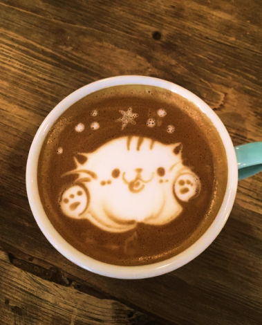
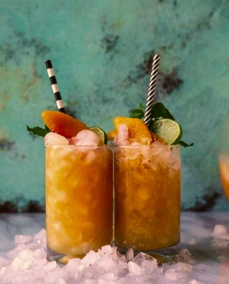
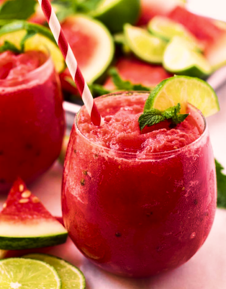
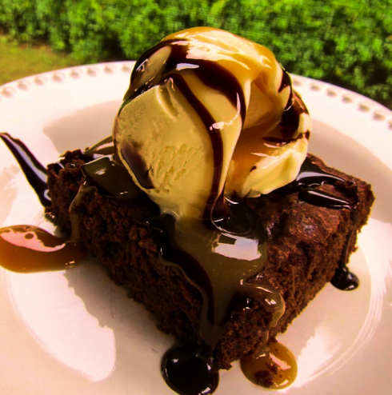
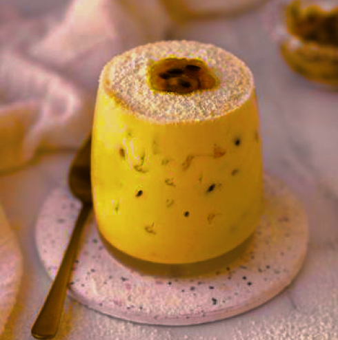
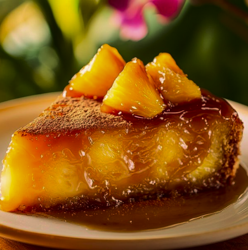
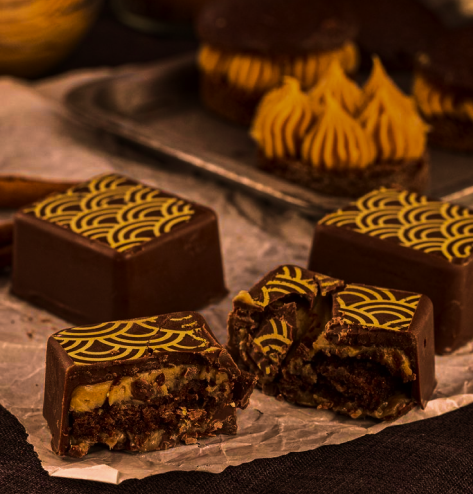

Cafézinho
Um clássico café espresso, servido quentinho e encorpado, ideal para iniciar o dia ou acompanhar uma boa conversa. Acompanhado de um toque suave de creme, ele é a escolha perfeita para quem busca simplicidade com qualidade.
R$ 8,00
Chocangibre
Uma bebida quente que mistura a suavidade do chocolate com o toque picante do gengibre, criando uma combinação perfeita para aquecer os sentidos. O sabor encorpado do chocolate é equilibrado pela leveza e frescor do gengibre, tornando essa bebida única.
R$ 12,00
Cappucinno com Canela
Uma bebida quente que mistura a suavidade do chocolate com o toque picante do gengibre, criando uma combinação perfeita para aquecer os sentidos. O sabor encorpado do chocolate é equilibrado pela leveza e frescor do gengibre, tornando essa bebida única.
R$ 14,00
Brisa Tropical
Uma mistura refrescante de frutas tropicais como abacaxi e pêssego, combinados com a leveza da água de coco e um toque de hortelã. Uma bebida suave e naturalmente doce que transmite a sensação de um brisa fresca da praia.
R$ 14,00
Frozen Watermelon Lemonade
Uma explosão de frescor e sabor! Essa limonada gelada é feita com suco natural de melancia e um toque de limão, combinados com a leveza da água de coco, criando uma bebida refrescante e revigorante, ideal para os dias quentes da primavera carioca.
R$ 18,00
Cheesecake de Morango Fresco
Uma sobremesa clássica e sofisticada, com uma base crocante de biscoito, recheada com um creme de queijo cremoso e suave. Coberto com morangos frescos e suculentos, esta combinação de sabores é perfeita para quem busca um equilíbrio entre doçura e acidez. Uma verdadeira explosão de frescor a cada garfada!
☆ Bebida Recomendada: Chocangibre
R$ 22,00
Brownie com Sorvete de Maracujá
Uma deliciosa sobremesa que combina a textura densa e chocolatuda do brownie com a acidez refrescante do sorvete de maracujá. Uma experiência doce e ao mesmo tempo cítrica, ideal para os amantes de sobremesas intensas e balanceadas.
☆ Bebida Recomendada: Cappuccino com Canela
R$ 22,00
Doce Encanto
Uma mousse leve e aveludada, feita com a doçura natural da manga, que derrete na boca com uma textura cremosa. A calda de maracujá adiciona uma acidez suave, enquanto o coco crocante oferece um contraste perfeito, proporcionando uma experiência de sabor tropical e refrescante. A harmonia de sabores tropicais faz desta sobremesa uma verdadeira indulgência.
☆ Bebida Recomendada: Brisa Tropical
R$ 18,00
Bolo Abacaxi Caramelizado
Uma fatia de verão em cada pedaço! Esse bolo de abacaxi caramelizado traz uma combinação irresistível de frutas tropicais e uma massa fofinha e úmida, criando o equilíbrio perfeito entre doçura e acidez. Acompanhado de uma leve camada de caramelo, é uma verdadeira explosão de sabores.
☆ Bebida Recomendada: Frozen Watermelon Lemonade
R$ 20,00
Pão de Mel
Uma deliciosa mistura de mel, especiarias e chocolate, transformada em um bolo fofinho e coberto com chocolate. Esse clássico da culinária brasileira é perfeito para acompanhar um café ou chá, trazendo um sabor acolhedor e doce.
☆ Bebida Recomendada: Cafézinho
R$ 10,00